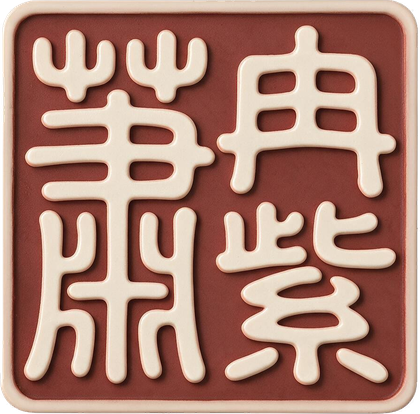
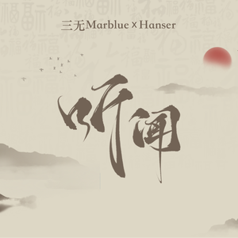

安冉

写代码的我
新南威尔士大学 信息科技硕士（2027 届），三个深度学习项目从数据到模型亲手跑通——音乐流派分类最优验证集 92%+。

写歌的我
十年作曲与制作，担任作曲 / 制作人 / 统筹 / 策划——电视剧片头曲、网易云官方企划、官媒合作，作品都在真实市场发声。
写代码的我
AI LAB · 1/2三个深度学习项目，从数据、模型到实验都亲手参与。先看最贴近音乐的那个。
用 AI 听懂音乐：10+ 种方案系统对比，预训练模型 AST 拿到最优——CCMusic 验证集 92%+。
基于 FMA-small 与 CCMusic 两个公开数据集开展音乐流派分类研究——让模型从音频信号中识别音乐风格，并系统比较传统机器学习、CNN 与预训练音频模型的表现。
- 负责音频数据预处理及 Mel Spectrogram 特征提取，搭建音频分类数据处理流程。
- 基于 PyTorch 实现 MLP 基线模型，参与 CNN 模型训练及参数调优。
- 分析不同数据集对模型性能的影响，参与实验结果整理及性能评估。
写代码的我
AI LAB · 2/2另外两个计算机视觉项目——同样的打法：亲手调参、系统对比、指标说话。
从网络结构到超参反复迭代，最终分类准确率 94%+。
基于 PyTorch 完成中文手写数字识别模型训练，通过调整网络结构与训练参数持续提升分类性能。
- 修改 net.py 网络结构，调整隐藏层、训练轮数等模型参数。
- 结合实验结果反复训练调优，比较不同配置的分类效果。
- 分析 Accuracy 曲线与混淆矩阵，定位易混淆类别。
- 对不同模型配置系统比较，完成性能分析与实验结果可视化。
4 种分割模型 × 4 种骨干网络系统对比，以指标给出选型依据。
基于多种深度学习语义分割模型完成遥感图像目标分割，对不同网络结构与骨干网络进行实验比较，分析各模型性能与适用场景。
- 参与模型调参与实验设计，比较不同网络结构与参数配置。
- 结合 IoU、Loss 等指标评估模型表现，分析优缺点与适用场景。
- 参与项目论文撰写，总结实验结论，为模型选型提供参考。
- 以 IoU、Loss 与训练效率为依据评估各组合表现，为模型选型提供参考。
另一半，不靠显卡，靠耳朵。
写歌的我
DISCOGRAPHY十年协作网络：歌手、制作人、游戏与影视厂牌；社群运营与直播实践同在其列
交汇的我
CONVERGENCE音乐理解的实验，我从数据跑到模型
在音乐音频分类项目里，我负责音频预处理与 Mel 频谱特征提取、搭建数据处理流程，实现 MLP 基线，并参与 CNN 与预训练模型 AST 的训练调参——模型怎么"听"音乐，我在数据与实验层面完整走过。
我懂一首歌怎么从零长出来
十年里我做过作曲、制作人、统筹、策划——从电视剧片头曲到官媒合作曲，从 demo 到上线的每个环节都亲手走过。
我已经在用 AI 做音乐
以创作者视角深度体验 Suno 等 AI 做歌工具，从旋律延续、编曲到人声处理，输出对 AI 音乐产品的真实体验与流程分析——不是旁观者，我本身就是用户。
为什么是我
- 做 AI 音乐运营 / 产品:懂模型能力边界，也懂创作者与听众要什么。
- 做数据与效果评估:亲手跑过分类实验，看得懂指标，也提得出音乐维度的评价标准。
- 做创作者生态:我自己就是十年的创作者，天然理解这条链路的痛点。
教育、技能与荣誉
CREDENTIALS我想定义它的下一步。
我正在寻找 AI 音乐产品 / 应用 方向的机会，随时可以聊。